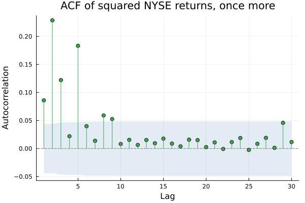
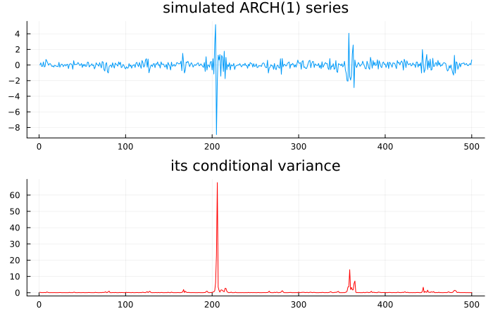
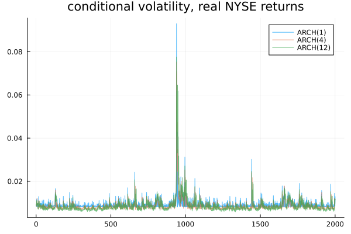
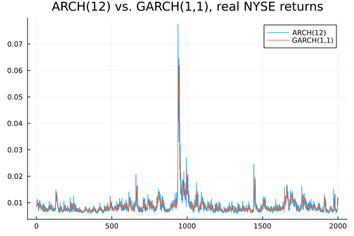
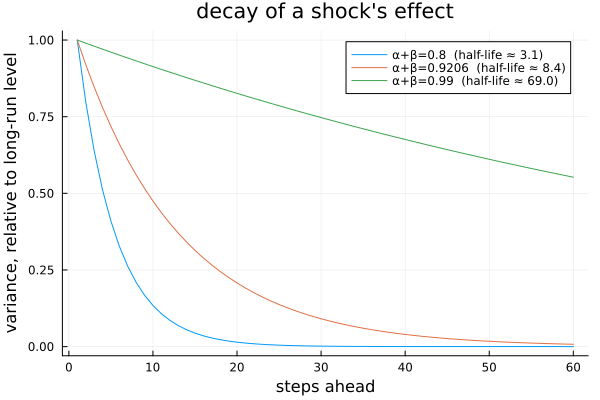
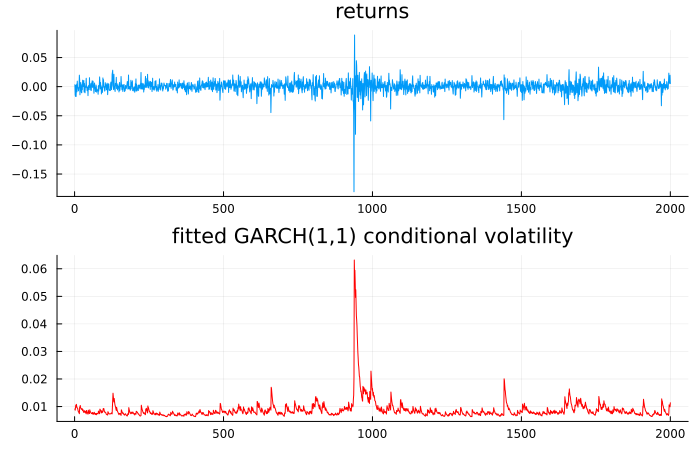
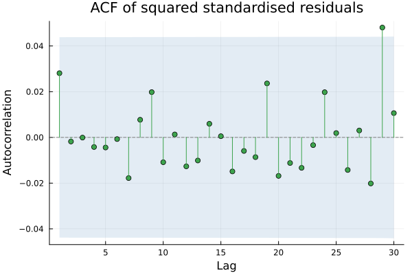
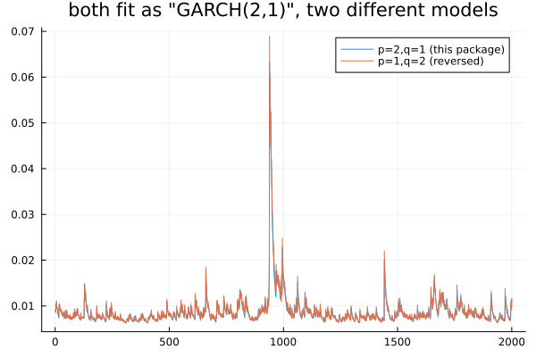

ARCH and GARCH
Chapter 24 established that the variance moves and that its movement is predictable. This chapter models it, using an idea that is genuinely simple, wrapped in notation that is genuinely confusing — and the confusion is this chapter's disagreement box.
Model the squares
using TSAnalytics, Plots, Random
d = dataset("nyse")
r = d.value
plot(acf(r.^2, 1:30); title="ACF of squared NYSE returns, once more", legend=false)
Squared returns are autocorrelated, which means squared returns can be predicted from past squared returns. That sentence is the entire idea. An autoregression on squared returns is exactly the machinery Chapter 17 built, applied to a different quantity than before. Engle's contribution in 1982 was not the mechanism, which was already familiar — it was noticing that the variance itself was worth modelling, at a time when variance was treated as a nuisance parameter to be estimated once and forgotten.
ARCH
Random.seed!(5)
n = 500
omega0, alpha0 = 0.05, 0.85
e_arch1 = zeros(n)
sig2_true = zeros(n)
sig2_true[1] = omega0 / (1 - alpha0)
e_arch1[1] = sqrt(sig2_true[1]) * randn()
for t in 2:n
sig2_true[t] = omega0 + alpha0 * e_arch1[t-1]^2
e_arch1[t] = sqrt(sig2_true[t]) * randn()
end
p1 = plot(e_arch1; title="simulated ARCH(1) series", legend=false)
p2 = plot(sig2_true; title="its conditional variance", legend=false, color=:red)
plot(p1, p2; layout=(2,1), size=(700,450))
A simulated ARCH(1) process, α = 0.85. The variance panel spikes immediately after every large return and decays back toward its resting level. That is the whole model: today's variance is a constant plus a multiple of yesterday's squared shock. A big move yesterday means a big expected move today; several quiet days in a row mean the variance has nothing recent to react to and settles down.
m1 = fit_garch(r, 1, 0)
m4 = fit_garch(r, 4, 0)
m12 = fit_garch(r, 12, 0)
plot(sqrt.(m1.sigma2); label="ARCH(1)", alpha=0.7)
plot!(sqrt.(m4.sigma2); label="ARCH(4)", alpha=0.7)
plot!(sqrt.(m12.sigma2); label="ARCH(12)", alpha=0.7, title="conditional volatility, real NYSE returns")
for (nm,m) in [("ARCH(1)",m1),("ARCH(4)",m4),("ARCH(12)",m12)]
println(nm, ": aic=", round(m.aic,digits=1), " bic=", round(m.bic,digits=1))
endARCH(1): aic=-13175.1 bic=-13163.9
ARCH(4): aic=-13391.7 bic=-13363.7
ARCH(12): aic=-13432.4 bic=-13359.6Fitted to real NYSE returns rather than simulated data: ARCH(1) is too jumpy, dropping back toward its resting level almost immediately after every shock, which is not how real volatility persists. Adding lags smooths the path, and by ARCH(12) the fit is genuinely reasonable — at the cost of twelve estimated parameters, spent on exactly the kind of smoothing a single well-chosen alternative might buy more cheaply. This is Chapter 17's parsimony problem again, in a new setting, and it has the same shape of solution.
GARCH
mg = fit_garch(r, 1, 1)
println("GARCH(1,1): omega=", round(mg.omega, digits=6), " alpha=", round(mg.alpha[1], digits=6),
" beta=", round(mg.beta[1], digits=6))
println("AIC: ARCH(12)=", round(m12.aic,digits=1), " GARCH(1,1)=", round(mg.aic,digits=1))
println("BIC: ARCH(12)=", round(m12.bic,digits=1), " GARCH(1,1)=", round(mg.bic,digits=1))
using Statistics
println("correlation between the two conditional-variance paths: ", round(cor(m12.sigma2, mg.sigma2), digits=3))
plot(sqrt.(m12.sigma2); label="ARCH(12)")
plot!(sqrt.(mg.sigma2); label="GARCH(1,1)", title="ARCH(12) vs. GARCH(1,1), real NYSE returns")
A visibly similar variance path (correlation 0.877) from three parameters instead of twelve. The GARCH term feeds yesterday's variance back into today's, rather than only yesterday's squared shock — which gives the recursion an infinite memory with geometrically declining weights, exactly the shape ARCH(12) was approximating by brute force with twelve separately estimated coefficients. On raw AIC the two are close enough to call a draw (-13432.4 against -13422.9, ARCH(12) still narrowly ahead); on BIC, which penalises parameter count more heavily as the sample grows, GARCH(1,1) wins clearly (-13406.1 against -13359.6). Three parameters buying nearly the same description that twelve otherwise required is the entire case for GARCH.
ab_values = [0.80, 0.9206, 0.99]
h = 1:60
plot(; xlabel="steps ahead", ylabel="variance, relative to long-run level", title="decay of a shock's effect", legend=:topright)
for ab in ab_values
decay = ab .^ (h .- 1)
hl = log(0.5) / log(ab)
plot!(h, decay; label="α+β=$(ab) (half-life ≈ $(round(hl,digits=1)))")
end
plot!()
α + β governs how long a shock's effect on variance lasts. The fitted value above, 0.9206, gives a half-life of about 8.4 trading days — noticeably persistent, though nowhere near the extreme case. As α + β approaches 1 the decay becomes arbitrarily slow (0.99 gives a half-life past two calendar quarters), and at exactly 1 the variance would never revert at all. The parallel with Chapter 8's unit root is exact and worth drawing directly: this is the same near-unit-root situation in a different equation, with the same consequence — the model is estimable, but the long-run behaviour it implies is only weakly pinned down by any finite amount of data.
ω > 0 is required for the variance recursion to stay positive, and α, β ≥ 0 are needed for the same reason at every step. Chapter 26 shows a model that escapes these constraints entirely, by construction rather than by careful bookkeeping.
Fitting one
p1 = plot(r; title="returns", legend=false)
p2 = plot(sqrt.(mg.sigma2); title="fitted GARCH(1,1) conditional volatility", legend=false, color=:red)
plot(p1, p2; layout=(2,1), size=(700,450))
The likelihood is maximised numerically, the constraints from the previous section must hold throughout the search, and convergence is never automatically guaranteed — which is exactly why this package's n_restarts and fit_garch_multi exist, the same multi-start discipline fit_arma's own optimiser already relies on.
std_resid = mg.resid ./ sqrt.(mg.sigma2)
a_raw = arch_lm_test(r)
a_std = arch_lm_test(std_resid)
println("ARCH-LM on raw returns: stat=", round(a_raw.statistic,digits=2), " p=", round(a_raw.pvalue,digits=4))
println("ARCH-LM on standardised residuals: stat=", round(a_std.statistic,digits=2), " p=", round(a_std.pvalue,digits=4))
plot(acf(std_resid.^2, 1:30); title="ACF of squared standardised residuals", legend=false)
Divide each return by its own fitted conditional standard deviation and the picture changes completely: ARCH-LM on the raw returns rejects overwhelmingly (p < 0.0001), while the same test on the standardised residuals comes back clean (p = 0.805). If the model has genuinely captured the variance dynamics, nothing predictable should remain in the squares of what it leaves behind — this is the volatility equivalent of Chapter 10's residual check, and the tool transfers without modification.
Two conventions and one default
m_a = fit_garch(r, 2, 1) # this package's convention: p=2 ARCH terms, q=1 GARCH term
m_b = fit_garch(r, 1, 2) # the reverse convention some texts use for "GARCH(2,1)"
plot(sqrt.(m_a.sigma2); label="p=2,q=1 (this package)")
plot!(sqrt.(m_b.sigma2); label="p=1,q=2 (reversed)", title="both fit as \"GARCH(2,1)\", two different models")
println("convention A: alpha=", round.(m_a.alpha,digits=4), " beta=", round.(m_a.beta,digits=4), " loglik=", round(m_a.loglik,digits=2))
println("convention B: alpha=", round.(m_b.alpha,digits=4), " beta=", round.(m_b.beta,digits=4), " loglik=", round(m_b.loglik,digits=2))
println("correlation of the two variance paths: ", round(cor(m_a.sigma2, m_b.sigma2), digits=4))convention A: alpha=[0.1117, 0.0] beta=[0.8089] loglik=6714.44
convention B: alpha=[0.1382] beta=[0.3708, 0.3936] loglik=6718.42
correlation of the two variance paths: 0.9813Two different models, fitted to the identical data, both of which some piece of software somewhere would call "GARCH(2,1)". The variance paths correlate closely (0.981) but are not identical — real, verified numbers, not an assertion.
Random.seed!(7)
n2 = 1500
om, al, be = 0.05, 0.10, 0.85
e = zeros(n2); s2 = zeros(n2)
s2[1] = om/(1-al-be); e[1] = sqrt(s2[1])*randn()
for t in 2:n2
s2[t] = om + al*e[t-1]^2 + be*s2[t-1]
e[t] = sqrt(s2[t])*randn()
end
m_rob = fit_garch(e, 1, 1; cov_type=:robust)
m_cla = fit_garch(e, 1, 1; cov_type=:classic)
println("omega: robust se=", round(m_rob.se[1],digits=5), " classic se=", round(m_cla.se[1],digits=5),
" (", round(100*(m_rob.se[1]/m_cla.se[1]-1),digits=1), "% different)")omega: robust se=0.02409 classic se=0.02319 (3.9% different)Reading Python's arch package's own source (GARCH(p=1, o=0, q=1)) directly: p is the ARCH order, q is the GARCH order, and o is a separate slot for asymmetric terms — ARCH comes first, matching R's garchOrder = c(p, q) exactly. The confusion in wide circulation comes from a different source: some texts and wrappers write "GARCH(p, q)" with p as the GARCH order, the exact reverse. Both conventions genuinely exist in print, and GARCH(1,1) is immune to the whole problem — with p = q = 1 the two conventions coincide and nobody ever notices the ambiguity. A "GARCH(2,1)" means two structurally different models depending on whose notation is being read, shown concretely in the two panels above, and since GARCH(1,1) is what the overwhelming majority of applied work actually fits, the ambiguity has survived for decades unexamined. This package follows p = ARCH, q = GARCH, matching both arch and R.
The second disagreement is smaller but of the same family already met in Chapter 18's four-way standard-error comparison: arch defaults to the Bollerslev–Wooldridge robust ("sandwich") standard errors rather than the classical inverse-Hessian ones. On a fresh simulated GARCH(1,1) series (n = 1500, seed fixed and reproducible from the code above), ω's robust standard error differs from its classical one by a few percent — smaller than a dramatic reversal, but the same underlying phenomenon as before: which covariance estimator is the software's silent default changes the number a reader sees, without changing the fitted model at all. This package defaults to :robust, matching arch; cov_type=:classic recovers the other convention explicitly. This is the second time in the book the same class of problem has shown up under a different name, and naming it as a pattern — rather than treating each occurrence as a fresh surprise — is the more useful habit for a reader to take away.
Fitted α + β for Indian equity indices typically lands in the 0.95 to 0.99 range — high persistence, meaning a volatility shock decays slowly, and close enough to 1 that the implied long-run variance is only weakly determined by the data actually available.
That has a practical edge worth acting on rather than just noting. A GARCH model fitted across a period that actually contains a structural break will report very high persistence, because the break itself looks to the model like an extremely slow-decaying shock — it has no way to distinguish "genuinely persistent clustering" from "one big level change that never reverted." Unusually high estimated persistence is therefore weak evidence of genuine persistence and reasonable evidence that Chapter 24's variance-shift test should have been run before reaching for GARCH at all.
Where this leaves you
You can model a variance that moves, with three parameters, and check directly whether the model actually worked. The model built in this chapter treats a large fall and a large rise as identical shocks — squaring destroys the sign before it ever reaches the variance equation. Anyone who has watched a market fall knows that is not how volatility actually behaves. Chapter 26 fixes that, in two different ways.